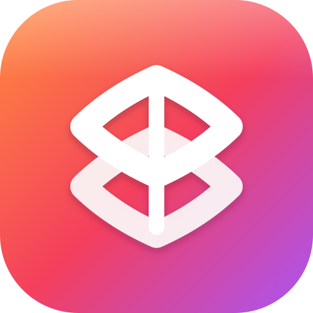

JMB Virtuals
Huddle TV
On the laptop: open the Huddle → Start the huddle → press Show on TV and type this code.
This screen follows the huddle from then on.
Connecting…
Not filling the screen? Remote: Up / Down changes the size · OK = full screen